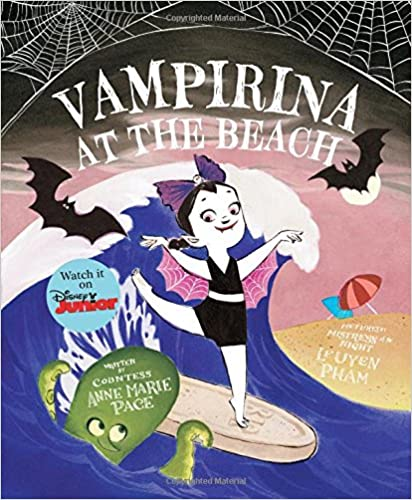

written by Anne Marie Page, pictures by Leuyen Pham
When the summer moon is full, a beach trip is an epic way to spend the night.
Kick off the evening by helping to unpack the car. You'll want a cooler full of yummy drinks and snacks to stave off hunger.
Don't forget the sunscreen! Stake out your home base with a colorful beach blanket and an umbrella. Near a lifeguard stand is best.
There's a lot to do at the beach, but you've got all night for fun! Just pick anything and dive right in.
In the ocean, always stay with a buddy or two, and only swim where the lifeguards can see you.
Playing in the waves can be a lot of fun. Hop over low waves, and dive through the high ones... but never turn your back to the sea!
When the waves are breaking just right, give surfing a whirl. Practice your best ballet posture: catch a wave, demi-plie, and ride, ride, RIDE!
You'll quickly learn that wiping out is part of the game. As Madame always says, "Chin up!" It's hart to be the best at something new.
Learning to snorkel might be easier than learning to surf, but you still have to concentrate. Just remember to breathe through your mouth and not your nose.
Once you're feeling comfortable in the water, you'll discover all the hidden treasures of the ocean!
When you've had enough of the water, ask your fellow beachgoers if you can join their volleyball game. Remember that volleyball is like dancing.
You must leap high, stay light on your toes, and always hit your mark.
After the game, try your hand at a giant sand castle. You'll need a big shovel and bucket, a pile of wet sand... a bit of patience... and a lot of ingenuity!
Just don't build too close to the water! If the sand castle doesn't work out, don't worry. The night isn't over yet...
Get stocked for a masive midnight dance contest! It doesn't matter if it's Swan Lake on a stage or the twist in the sand- dancing with friends is fun that never stops.
Whether or not you come out on top, finishing with grace is what makes you a real winner.
As the night draws to an end, sit around a roaring fire. Roast marshmallows and hot dogs. Sing some old songs and make plans for an encore!
05/12/2023